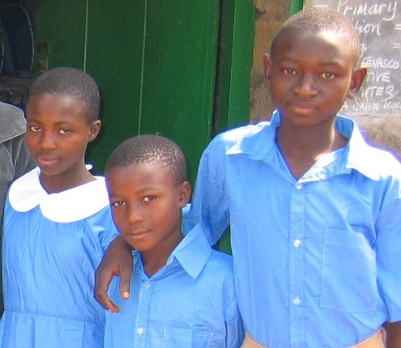

Policy Plan Ma-Flo Foundation 2022 – 2025
Introduction
The ‘Ma-Flo Foundation’ was created on 20.09.2007 to assist ‘Ma Flo’ (Mrs. Florence Foyab-Bergner) in her project and registered under Dutch law, at the Chamber of Commerce of Rotterdam under number 24421756.
A “Ma-Flo Support Committee” was created at Bali, to assure that the school community is involved, children are monitored and money properly spent and accounted for. Given the current political and crisis situation, the committee is unfortunately currently not active.
Background
During a family visit in 2005 to her birth town Bali in Cameroon in West Africa, ‘Ma Flo’ visited her old primary school. There she was told about children that no longer could go to school because their parents had passed away.
Ma Flo decided to do something and with gifts from friends and relatives in Cameroon and The Netherlands, she started in 2005 to pay the school costs for as many of these AIDS-orphans as she could.
Description of Target Group
Bali is a small town and district in the English-speaking part of the Republic of Cameroon. The inhabitants are almost exclusively part of the Bali-Nyonga sub-ethnic group, using apart from English, their own vernacular Mungaka and Pidgin English. Farming is the main occupation, with coffee as a cash crop and various food crops.
Although Cameroon is reportedly a middle-income country, many families live below the poverty line of less than two US dollars a day. The effects of HIV-AIDS have also left many children orphaned.
Negative (Political) Developments 2017-2022
The Anglophone part of Cameroon became federated to the French-speaking part in 1961. Over time, guarantees of separate systems were neglected, leading to protests in 2017. These protests were brutally repressed, escalating into a civil war with severe casualties and displacement.
Education was negatively affected, with schools being closed or destroyed. However, by late 2019, supported children had found their way into ‘Community Schools’ restoring their education.
Intentions of the Policy Plan 2022 - 2025
1. Functioning of the Board of the ‘Ma Flo Foundation’
- Expand board membership to strengthen fundraising and project oversight.
- Develop by-laws to regulate board functioning.
- Define parameters for the ‘Ma Flo Bali Aids Orphans Education project.’
2. Fundraising by the Board and by the “Ma-Flo Support Committee”
- Diversify and secure fundraising to support up to 20 orphans at primary school level.
- Encourage local funding sources in Cameroon to reduce reliance on Dutch support.
3. Publicity for the ’Ma Flo Foundation’ and the Education Project
- Enhance publicity materials to support fundraising efforts.
- Publish an annual report each March.
- Expand outreach through platforms like Facebook and LinkedIn.
4. Accountancy and Administration
- Regularize financial and administrative processes in collaboration with the “Ma Flo Support Committee.”
- Determine annual fund distribution for project activities.
5. Development of the ‘Ma Flo Bali Aids Orphans Education Project’
- Explore income-generating activities to decrease reliance on donations.
- Support schools with facility improvements like toilets and playgrounds.
Timeline, Targets, Checks, and Balances
Given the situation in Cameroon, setting specific timelines and targets is challenging. The Board will develop an action plan outlining implementation phases.
Confirmation and Adjustments of this Policy Plan
This Policy Plan 2022 - 2025 was confirmed in the ‘Ma Flo Foundation’ Board meeting on 18.09.2022. It will remain valid until March 2025 and may be adjusted in March 2023 or earlier if necessary.